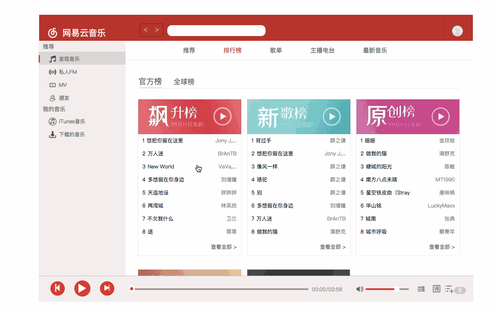
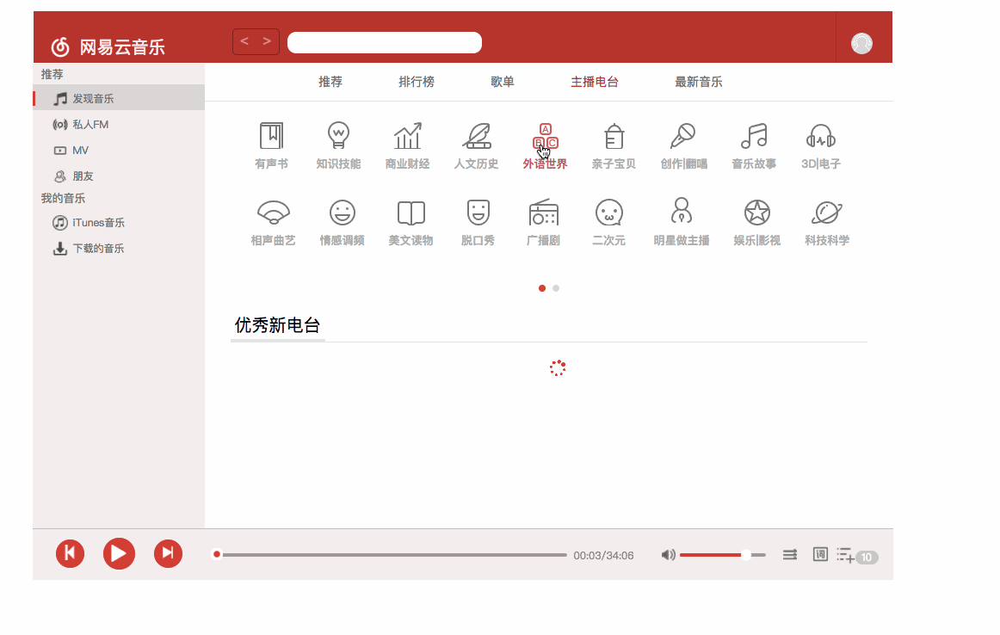

- 第一次用react写一个中型项目，以前都是做做小的demo
- 只能说是初体验吧，代码有些冗余，复用率不高，redux有些滥用,相比之下，RN的代码复用率，代码风格都好些
排行榜
歌单
电台
账号登录

排行榜，歌单，电台，音乐播放，查看个人收藏歌单，登录，切换播放模式，改变音量，静音，改变歌曲进度。
（具体详情看我的github：https://mbwu.github.io./cloudmusicReact.html）
在做的时候也遇到过一些问题，比如使用react-router嵌套多层的路由后，路由失效的问题，我个人觉得应该使用react-router配合react-redux做一个routerReducer解决，但是react-router的文档没有太多的讲解
直到我在用react-native 做 网易云音乐ios端时在才隐约觉得使用dispatch去进行路由间的跳转，当然当时做react版的时候是不知道的。
google搜过，社区也找过，耽误了几天，后来我换了另一个react路由lib解决了。
总的来说，存粹是用来刷react熟练度的一个作品，代码冗余过大，复用组件几乎为0。而且当初写的时候，我的想法是js文件间是一种树形结构，这样在维护的时候，各个组件间的关系会很明显，但是当项目写到一定程度后，修改一个文件名 ，需要改动的地方会很多，组件与组件间的耦合性太高，后来我就将所有文件间改成了扁平结构，导致文件目录看起来有些乱
写了一个package react-components-toolkit